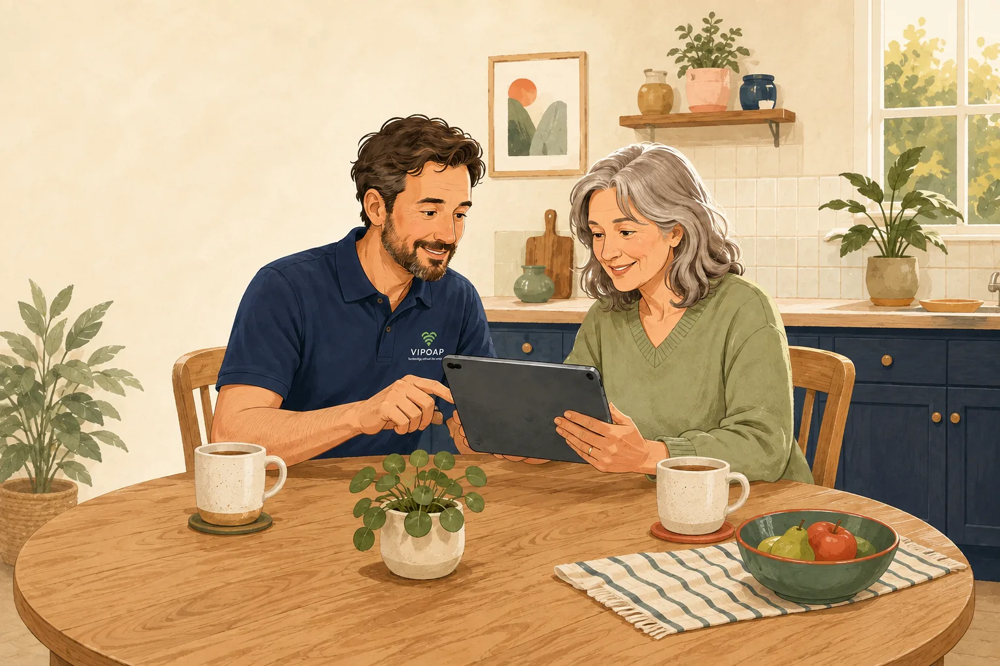

Patient technology help at home in Andover.
Friendly help with Wi-Fi, broadband, phones, tablets, printers, smart TVs and online safety — at home or remotely, explained in plain English. Home visits start from £49.

Choose what sounds most like your problem
You do not need to know the technical words. Start with what is worrying or frustrating you.
VIPOAP membership from £7.99 a month
Get up to 30 minutes of remote support each month, priority booking, an annual Technology Check-Up and calm help with scams and online safety.
There is no pressure to join and no long-term contract on the monthly plan.
VIPOAP Support
£7.99 each month
- Monthly remote-support allowance
- Priority booking and support queue
- Annual Technology Check-Up
- A nominated family or trusted contact
A local specialist, introduced clearly.
Your booking confirmation identifies the VIPOAP Engineer Partner assigned to you. At a home visit they arrive with branded photo ID, explain what they are doing and work at your pace.
If a home visit is not available in your area, we may still be able to help through a safe remote-support session.
How we keep support safeWhat you can expect
- A patient conversation before any work starts
- Options and costs explained in plain English
- No passwords, PINs or security codes requested
- A clear summary of the work and next steps
Unsure whether a message or phone call is genuine?
Do not click, pay or share information. Check it first or call us for calm, practical advice.
Wi-Fi that works where you need it
Weak signal upstairs, buffering television or poor coverage in the garden can often be improved without making things complicated.
See how better Wi-Fi works
You do not need to know what the problem is.
Just explain what is happening in your own words. We will help you work out the next step, without making you feel rushed or embarrassed.
Keep help close with the VIPOAP app
After your first visit, keep your appointment details, useful guides and safe ways to ask for more help in one place.